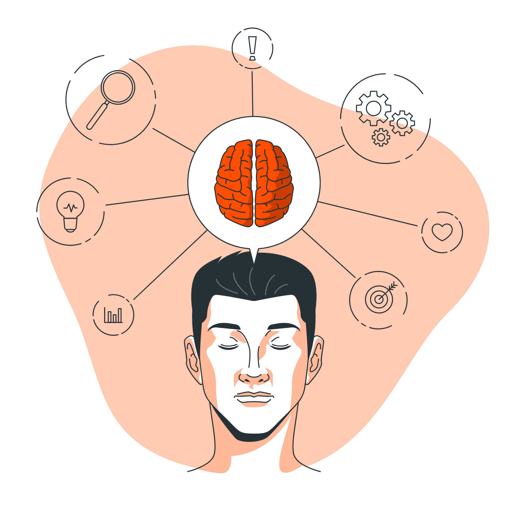

Języki, których nauce poświęcam sie od dłuższeg czasu. Znajomość ich w aktualnym stopniu zaawansowania pozwoliła mi stworzyć moje własne portfolio, w którym będą umieszczane moje kolejne mniejsze lub większe projekty.


Kolenym krokiem i celem w drodze rozwoju jest nauka framework oraz bibliotek
Mapa myśli

W niedalekiej przyszłości chciałbym zgłebić swoją wiedzę o frameworkach.
Projekty
Do tej pory zrobiłem 3 projekty:
- Body Chief Page
- Krypto Page
Trzecim jest aktualne "Portfolio"
Tutaj dowiesz się wiecej!
Journey
Podczas nauki korzystałem z różnych zasobów i sposobów zdobycia umiejętności:
- Zajęcia w szkole średniej i na studiach
- Poradniki i kursy na YT
- Projekty na rzecz studiów
- Rozwiązywanie zadań wymyślonych przez siebie oraz tych znalezionych w internecie
Z całą pewnością ta droga z każdym dniem będzie się wydłużała,
a kroki w niej stawiane będą coraz większe i efektywniejsze
Kontakt
Umiejętności
Umiejętności
- Znajomość JavaScript
- Znajomość HTML5
- Znajomość CSS3
- Znajomość
- Znajomość narzędzi do kontroli wersji, np. Git
- Rozumienie zasad responsywnego projektowania
- umiejętność współpracy
Praca nad sobą sprawia, że cały czas zbobywam nowe umijejętności i rozwijam te,
które już posiadam
Hobby
Mam wiele zainteresowań, ale w wolnych chwilach najbardziej lubię spędzać czas z przyjaciólmi.
Nie odmówie też wieczoru z dobrym serialem, książką lub gierką.
A oto lista rzeczy dają mi ogrom radości:
Nie odmówie też wieczoru z dobrym serialem, książką lub gierką.
A oto lista rzeczy dają mi ogrom radości:
- Piłka nożna
- Siłownia
- MMA
- Projektowanie stron
- Gry planszowe
- Muzyka
Więcej o mnie możesz się dowiedzeć Tutaj
Cele
W niedalekiej przyszłości chciałbym zgłebić swoją wiedzę o frameworkach.
Będzie to krok milowy w dalszej karierze.
Moje cele na nadchodzące miesiące:
- Poszerzenie repertuaru umiejętności
- Znalezienie pracy/stażu
- Udział w projektcie komercyjnym
- Dodanie kolejnych projektów do swojego portfolio
- Nieustanny rozwój
Doświadczenie
Mimo, że moje doświadczenie nie jest jeszcze zbyt wielkie, to mogę się jednak pochwalić zdobytą wiedzą za pomocą:
- Dziesiątki godzin spędzonych w szkole średniej na nauce front-end
- Kolejne godziny poświęcone nauce na studiach
- Zawiętość, chęć i ambicja, która pozwala każdego dnia zbobywać doswiadczenie poprzez:
- Samodzielna naukę z kursów
- Tworzenie własnych projektów